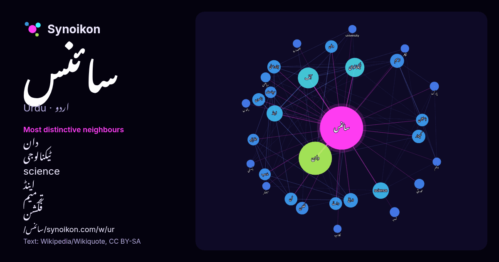

اردو · مقبول لفظ
سائنس
“science” · ویکیپیڈیا, Wikiquote کے 808 استعمالات میں اس کے آس پاس ملنے والے الفاظ۔

سب سے نمایاں پڑوسی
- دان 104×
- ٹیکنالوجی 49×
- science 46×
- اینڈ 31×
- ترمیم 28×
- فکشن 26×
- آف 26×
- کمپیوٹر 25×
- جغرافیہ 23×
- وطن 17×
- برائے 17×
- ریاضی 15×
- اسٹیشن 15×
- فن 14×
- سیاست 13×
- قدرتی 13×
- انھوں 13×
- بیچلر 13×
- کاذب 13×
- یونیورسٹی 13×
× = عام ویکیپیڈیا متن کے مقابلے میں کتنے گنا زیادہ۔
سب سے زیادہ آنے والے پڑوسی
- دان 198
- میں 189
- آف 78
- کا 71
- سے 70
- ٹیکنالوجی 66
- کو 58
- نے 58
- science 48
- اینڈ 47
- اس 37
- تاریخ 37
- ترمیم 35
- جو 32
- کمپیوٹر 32
- یونیورسٹی 32
- انھوں 30
- برائے 29
- فن 29
- اسٹیشن 28
سیاق میں
- سائنس ایک منظم شعبہ ہے جو فطرت، اس کے ضوابط اور معاشرے کے بارے میں قابلِ آزمائش وضاحتوں کی صورت میں علم کی تشکیل اور تنظیم کرتا ہے۔ اس کی بنیاد سائنسی Wikipedia snippets · سائنس
- قومی تمغا برائے سائنس صدر ریاستہائے متحدہ امریکا کی طرف سے سائنس اور ہندسیات کے شعبوں علوم سلوکیہ اور معاشرتی علوم، حیاتیات، کیمیاء، ہندسیات، ریاضی اور Wikipedia snippets · قومی تمغا برائے سائنس
- سائنس کی پروشیائی اکیڈمی جرمنی میں ایک اکادمی تھی جس کو 11 جولائی 1700ء میں قائم کیا گیا، فنون اکادمی کے چار سال بعد جس کی طرف نام برلن اکادمی بھی چاہے Wikipedia snippets · سائنس کی پروشیائی اکیڈمی
- 1. سائنس سے ملیے! 2. سائنس کی جانب دوسرا قدم 3. سائنسدان کیسے بنتے ہیں؟ بچوں کی سائنس سائنس کو اردو میں علم کہتے ہیں اور علم کا مطلب ہوتا ہے جاننا یا Wikipedia snippets · بچوں کی سائنس
- سائنس کی روسی اکادمی (روسی: Росси́йская акаде́мия нау́к روس کی قومی اکادمی اور سائنسی تحقیقی مجالس کے جال پر مشتمل ہے جو روسی وفاق بھر میں پھیلے ہوئے Wikipedia snippets · روسی سائنس اکادمی
- وفاقی اردو یونیورسٹی برائے فنون، سائنس اور ٹیکنالوجی پاکستان کی ایک عوامی جامعہ ہے جو اسلام آباد میں واقع ہے۔ سابق سربراہ ہائر ایجوکیشن کمیشن ڈاکٹر عطاءالرحمن Wikipedia snippets · وفاقی اردو یونیورسٹی برائے فنون،سائنس اور ٹیکنالوجی
- علمِ کمپیوٹر یا کمپیوٹر سائنس (انگریزی: Computer Science) دراصل معلومات اور تخمین(computation) کے بارے میں نظری مطالعے اور نظامِ کمپیوٹر (computer system) Wikipedia snippets · کمپیوٹر سائنس
- آدم جی سائنس کالج، کراچی پاکستان میں واقع ایک تعلیمی ادارہ ہے۔ Wikipedia snippets · آدم جی سائنس کالج
مزید الفاظ
2026-10-09 کو طے شدہ ترتیبات (±5 الفاظ، درمیانہ کارپس) کے ساتھ پہلے سے شمار کیا گیا۔ انٹرایکٹو نقشہ اسے لائیو ڈیٹا سے تازہ کر سکتا ہے۔
مشینی ترجمہ شدہ انٹرفیس؛ اصلاحات کا خیرمقدم ہے۔